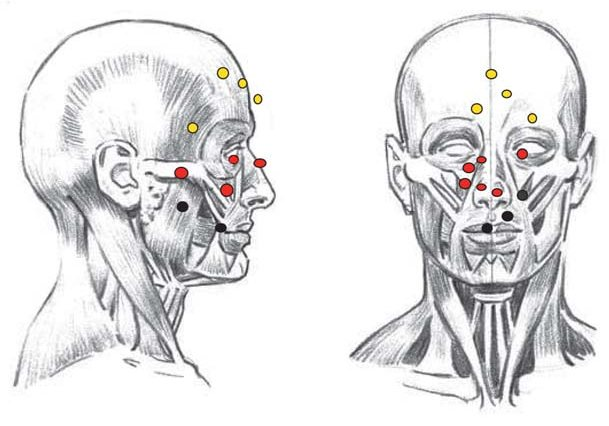
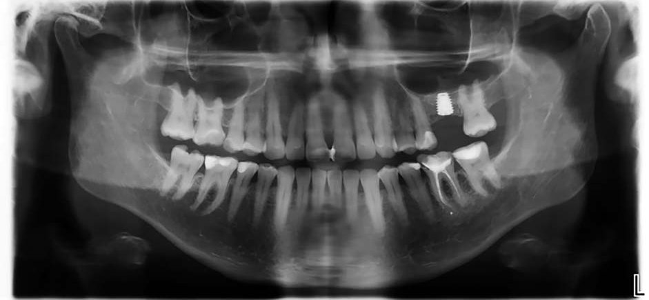
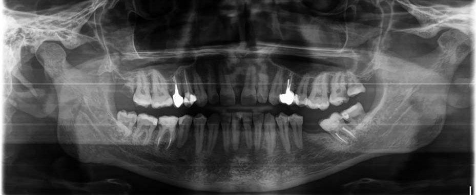
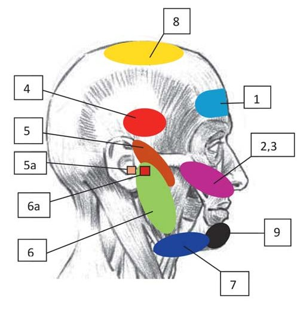
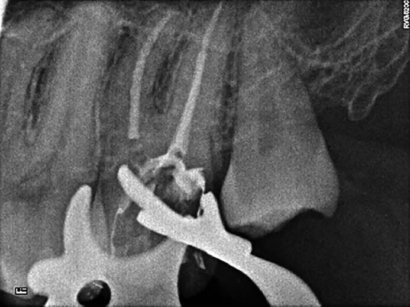

Наука · журнал «ДентАрт» 2023 №2
Пульпіт чи невралгія? Основні диференційно-діагностичні ознаки
Pulpitis or neuralgia? The main differential diagnostic features
Больовий синдром — типова реакція організму на ушкодження. Гострий біль можна розглядати як захисну реакцію організму, спрямовану на запобігання подальшому ушкодженню. Він здатен заспокоюватися після припинення дії патологічного фактора.
Хронічний біль, навпаки, зберігається навіть після припинення дії ушкоджуючого фактора. Виникнення хронічного болю пов'язане з тривалим подразненням периферійних больових рецепторів, що призводить до дисфункції нервових закінчень або патологічних змін у нервових центрах без ознак периферійного ураження чи травми. Через кілька місяців до розвитку больового синдрому приєднується психогенний компонент.
На сьогодні хронічний больовий синдром є самостійним захворюванням. При цьому формується так звана «больова домінанта», яка означає стан органу чи системи, коли ушкодження вже не викликає гострого болю або загоїлося, але внаслідок підвищення чутливості центральної і периферичної нервової системи до повторної дії на неї факторів ендогенного та екзогенного походження (сенситизації) біль викликається чинниками, що в нормі не спричиняють подібної реакції.
Під дією хронічного подразника в дентальних нервах можуть виникати зміни, що призводять до виникнення хронічного больового синдрому нейрогенного походження. Так, перші зміни, що виникають у нервових закінченнях, спостерігаються при втраті тимчасових зубів. Далі йде період відносної стабільності, але в середньому віці може виникати подразнення центральних та периферійних нервів, формування хронічного больового синдрому внаслідок травми, видалення третіх молярів, видалення зубів, уражених карієсом, а також після ендодонтичного лікування.
Через апікальний отвір однокореневого зуба в пульпу проникає близько 10000 соматосенсорних нервових закінчень (больових рецепторів). Це означає, що в результаті ендодонтичного лікування моляра верхньої щелепи відбувається розтин 30000 нервових закінчень. Більше того, некроз пульпи в багатокореневих зубах призводить до некрозу 30000 нервових волокон.
Логічно було б передбачити, що подібна травма периферичних нервових відростків призводить до змін центральної нервової системи. Експерименти на тваринах виявили підвищення активності відповідних центральних нейронів і рецептивних зон через рік після ендодонтичного лікування. Клінічні дослідження також вказують на те, що близько 5 % пацієнтів страждають від хронічного больового синдрому.
Найбільш розповсюдженими чинниками вторинної невралгії трійчастого нерва можуть бути невдало проведені операційні втручання у щелепно-лицевій ділянці, травматичне видалення зубів (особливо третіх молярів), невдало проведені ендодонтичне лікування та операції зі встановлення імплантів, захворювання скронево-нижньощелепного суглоба та низка інших причин.
Тригемінальна невралгія має два фенотипи. До першого належить суто пароксизмальна невралгія, для якої характерні гострі, стріляючі нападоподібні болі, що нагадують удар електричним струмом. Другий, що зустрічається у більш ніж 50 % випадків, характеризується постійними ниючими і пульсуючими болями (хронічний больовий синдром).
У деякої кількості пацієнтів задовго до виникнення характерних симптомів невралгії трійчастого нерва (кілька тижнів чи місяців) може виникати біль у ділянці гайморових пазух або зубний біль, який провокується рухами нижньої щелепи і може тривати годинами. Цей феномен має назву передтригемінальної невралгії.
Незважаючи на внутрішньочерепну локалізацію ураження, пацієнти з невралгією трійчастого нерва нерідко звертаються до лікаря-стоматолога зі скаргами на біль у зоні щелеп, частіше верхньої щелепи. Інколи біль локалізується на ділянці одного зуба, інколи групи зубів, але більш типовим є виникнення больових відчуттів у відповідь на доторкування до шкіри обличчя та в проєкції зубів (тригерні зони) (рис. 1).
Пацієнти намагаються уникати будь-яких дотиків (включаючи гоління) до тригерних зон і зводять до мінімуму рухи мімічної мускулатури та мовне спілкування, щоб уникнути нападів болю. Такі маніпуляції, як масаж обличчя, прикладання теплих чи холодних компресів не зменшують, а навпаки, збільшують інтенсивність больових відчуттів. Навіть чищення зубів або потік повітря із відчиненого вікна можуть провокувати больові напади. У той же час під час сну біль виникає рідко.
Для тригемінальної невралгії властивий колючий біль на одній половині обличчя (частіше правій), що провокується жуванням або дотиком до уражених ділянок. Типовий напад болю при невралгії трійчастого нерва може тривати від 10 секунд до 2-3 хвилин. Біль миттєво досягає максимальної інтенсивності і поступово стихає через 20-30 секунд, переходячи у пекучий біль, який може тривати від кількох секунд до хвилин. Під час больових нападів для зменшення інтенсивності відчуттів пацієнти можуть рухати головою та активізувати міміку, що нагадує больовий тик. Після нападу починається світлий період, протягом якого больовий напад спровокувати вже неможливо (рефракторний період). Це дуже важлива диференційна ознака, характерна для цього захворювання.
Як правило, близько 60 % пацієнтів скаржаться на поширення стріляючого болю у напрямку від кута рота до кута нижньої щелепи, близько 30 % — від ділянки верхньої губи до орбіти ока та брови, виключаючи власне орбіту.
Досить часто пацієнти із невралгією трійчастого нерва мають почервоніння обличчя та склери, появу слизових виділень із носа, спазм та слабкість м'язів обличчя, зміну чутливості на боці ураження. Іноді, особливо у перший рік ураження, бувають спонтанні ремісії захворювання. При підозрі на невралгію трійчастого нерва пацієнта слід направити на консультацію до лікаря-невролога.
До уражень трійчастого нерва також належить невропатія трійчастого нерва та його гілок. Для цього захворювання властиві аксонопатія, мієлінопатія та судинні порушення стовбура нерва. Воно характеризується нейрогенними порушеннями чутливості в ураженій ділянці, вегетативно-трофічними та моторно-рефлекторними розладами. Якщо тригемінальна невралгія акцентує відчуття пацієнта на больових пароксизмах та больових тиках, то для невропатії більше властивий тупий постійний біль, який часто супроводжується відчуттям затерплості та парестезіями на ділянці ураження.
Постійний біль неврогенного походження часто називають невропатичним. Такий вид болю виникає при зниженні порога больової чутливості мультирецептивних нейронів або спонтанно, або внаслідок тривалого існування больових подразників. Відбувається порушення здатності нейронів до диференціації різноманітних подразників, таких як тиск чи вплив температури. При цьому будь-який подразник сприймається як больовий. Таким чином, больовий напад підтримується нормальною активністю нервового волокна. Невропатичний біль у зоні трійчастого нерва може виникати спонтанно в центральних нейронах при відсутності подразнення на периферії. Біль при цьому поширюється на певну ділянку ротової порожнини, частіше на ділянку зуба, і незважаючи на те, що клінічне та рентгенологічне дослідження можуть не виявити жодних ознак патології, пацієнт може бути переконаний, що він може абсолютно точно вказати локалізацію болю.
Клінічний випадок 1
Пацієнтка З., 42 роки, перебуває на диспансерному спостереженні в клініці з 2006 року. Звернулася зі скаргами на відчуття оніміння щоки зліва та болі у лівому вусі. Стоматологічну патологію виключено. Зуби 25 і 37 — тест на вітальність позитивний. Зуб 36 — перкусія негативна, пальпація негативна.
Пацієнтка була скерована на консультацію до лікаря-отоларинголога — ЛОР-патологію виключено. Була скерована до лікаря-невролога — на основі даних анамнезу встановлено діагноз невропатія трійчастого нерва і призначено лікування.
Незважаючи на те, що вибір плану лікування не повинен базуватися тільки на больових відчуттях пацієнта, у деяких випадках клінічна картина буває настільки незрозумілою, що пацієнтові роблять екстирпацію пульпи чи навіть видалення зуба. Таке лікування може лише підсилити центральні нейропластичні процеси, що призведе до нейропластичних змін, а це у свою чергу матиме наслідком збільшення рецептивної зони і виникнення болю в зоні сусідніх зубів. Патологія може поширитися на волокна автономної нервової системи, що призведе до почервоніння шкіри обличчя на ураженій ділянці, набряку, сльозотечі та нежитю, які можуть нагадувати ознаки місцевого запалення.
У той же час місцеві периферичні подразники чи захворювання, а також лікувальні процедури, що викликають тривалу больову реакцію, можуть призвести до нейропластичних змін, які спричиняють розвиток нейропатогенного больового синдрому. При цьому слід пам'ятати, що біль не стихає навіть після припинення дії подразника, який викликає його появу. Повторне ендодонтичне чи хірургічне втручання здатне тільки погіршити ситуацію.
Біль нейрогенного походження слід диференціювати із болем при гострому пульпіті. На відміну від болю нейрогенного походження, біль при гострому пульпіті буває раптовим, інтенсивним, може мати рвучкий, пульсуючий характер. Біль посилюється під дією механічних, термічних та хімічних чинників і не зникає після видалення подразника. Частіше виникає або посилюється у нічну пору. Як правило, має нападоподібний характер (напади болю чергуються із безбольовими проміжками — інтермісіями). Тривалість больових нападів та інтермісій може бути різною, що пояснюється перевтомою та адаптацією нервової системи до тривалого болю. На початкових стадіях запального процесу у пульпових тканинах біль може бути локалізованим, а згодом — іррадіювати вздовж гілок трійчастого нерва (рис. 2).
Клінічний випадок 2
Пацієнт І., 26 років, звернувся у клініку зі скаргами на ниючий іррадіюючий біль на нижній щелепі зліва. Пацієнт чітко вказував на нижній зуб 35. При огляді каріозних порожнин у зубі 35 не виявлено. На ортопантомограмі чітко візуалізується каріозна порожнина в зубі 27 у межах навколопульпарного дентину. Цей зуб і виявився причинним.
Під час першого візиту проведено знеболення Sol. Ubistesini DS forte 1.7 ml 4 %, відновлення дистальної стінки склоіономерним матеріалом, ізоляцію, глибоку ампутацію пульпи, іригацію 5,25 % розчином натрію гіпохлориту. На устях кореневих каналів залишено «Ledermix» строком на 3 доби. Тимчасова пломба IRM. Наступного дня адміністраторка зателефонувала пацієнтові — скарг немає, зуб не турбує.
Другий візит: анестезія Sol. Ubistesini DS forte 1.7 ml 4 %, механічна та медикаментозна обробка кореневих каналів, обтурація. Зуб відновлено адгезивно під протезування.





Рис. 1. Локалізація тригерних зон при поширенні болю вздовж І, ІІ та ІІІ гілок трійчастого нерва. Рис. 2. Зони іррадіації пульпітного болю (за Міхеєвим і Рубіним): 1. Різці. 2. Різці, ікла, перший премоляр. 3. Премоляри, перший моляр. 4. Перший моляр. 5. Верхні моляри. 5 а. Точка іррадіації перших нижніх молярів (зовнішній слуховий прохід). 6. Нижні моляри. 6 а. Точка іррадіації других верхніх премолярів. 7. Нижні треті моляри. 8. Верхні треті моляри. 9. Нижні премоляри, різці, ікла. Клінічні випадки 1 і 2.
Висновки
Для верифікації діагнозу тригемінальної невралгії варто призначити додаткові методи дослідження, такі як комп'ютерна томографія (КТ) або магнітно-резонансна томографія (МРТ). Досить велику чутливість (59-100 %) та специфічність (93-100 %) має такий нейрофізіологічний метод дослідження, як перевірка рогівкового рефлексу. Цей метод ефективний при визначенні наявності ураження трійчастого нерва, для якого характерне зниження рефлексу на ураженому боці.
Диференційна діагностика пацієнтів з нейропатогенними болями трійчастого нерва складна навіть для лікарів, які вже стикалися з цією проблемою. Крім того, пацієнтам складно, а інколи практично неможливо пояснити, що у випадку нейропатогенного болю стоматологічне лікування їм не допоможе. У результаті збір анамнезу у пацієнтів з нейропатогенним больовим синдромом може бути значно ускладнений, а це часом призводить до того, що пацієнт так вводить в оману лікаря, що йому проводять необґрунтоване лікування. Пацієнтів з хронічним нейрогенним больовим синдромом слід направляти до невролога.
Література
- Dubner R., Hargreaves K. M. The neurobiology of pain and its modulation. Clin J Pain. 1989; 5(Suppl 2): S1–6.
- Hargreaves K. M., Dionne R. A. Endogenous pain pathways: application to pain control in dental practice. Compend Contin Educ Dent. 1982; 3: 161–166.
- Law A. S., Lilley J. P. Trigeminal neuralgia mimicking odontogenic pain. Oral Surg Oral Med Oral Pathol. 1995; 80: 96–100.
- Singh M. K., Campbell G. H., Gautam S., et al. Trigeminal Neuralgia. Medscape, 2019 Jul 11.
- Полтавський державний медичний університет. Невралгія трійчастого нерва: навчальний матеріал. — pols.pdmu.edu.ua.
- Невралгія трійчастого нерва: огляд літератури // Український медичний часопис. — umj.com.ua.